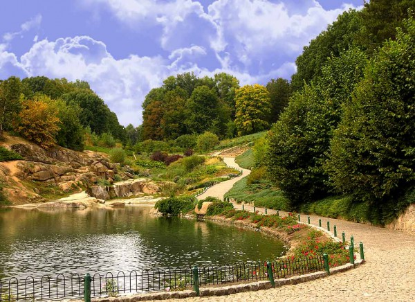
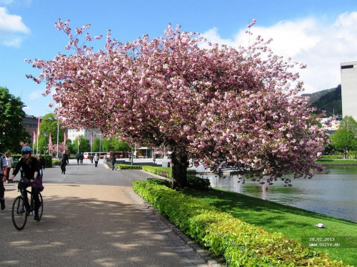
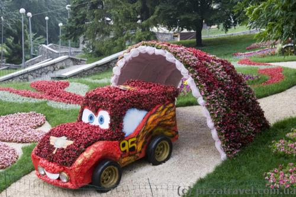
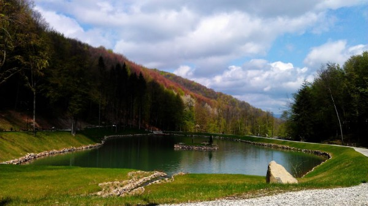

Головна |
Новини |
Фотогалерея |
Контакти |
|
Парки України |




Дендропарк Софіївка, Умань, Черкаська обл.Націона́льний дендрологі́чний парк «Софі́ївка», або Софіївський парк — шедевр світового садово-паркового мистецтва кінця XVII — початку XIX століть. Щорічно його відвідують близько 150 тисяч людей (гранично-допустима, науково-обґрунтована норма відвідування — 500 тисяч на рік). Площа — 179,2 га. Тут росте понад 3300 видів дерев і кущів (місцевих і екзотичних), серед них: таксодіум (кипарис болотний), сосна Веймутова, тюльпанне дерево, платан, гінкго та багато інших. Колективом парку видано каталог рослин, в якому нараховується 1994 таксони, з них 1220 деревних і кущових порід та 774 трав'янистих рослин, в тому числі 25 таксонів ліщини, 24 — буки, 41 — ялина, 44 — ялівці, 100 — ліан, 320 — троянд, 57 — рододендронів, 376 — ґрунтопокривних та 98 — квіткових рослин. Колекційний фонд парку в 2007 році нараховував 3323 таксонів, з них: 546 деревних, 1557 кущових, 115 ліан, 1212 трав'янистих рослин, з них 914 інтродукованих та 246 аборигенних. |
||
| Всі права захищені 2022 | |||